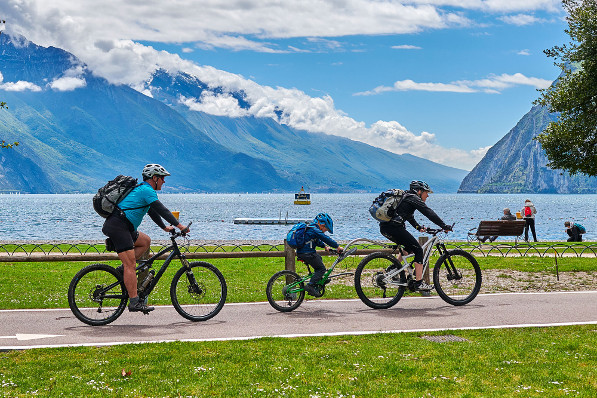

Noticias
Las mejores ciudades artísticas de Italia para explorar en bicicleta
Agosto 21, 2021Por Giacomo Capelettini
La bicicleta es la mejor forma de moverse por la ciudad pero también de disfrutar de la ciudad como turista: ¿qué tal sentir la brisa en el pelo y la sensación de libertad? ¡No hay comparación! Además, en bici puedes recorrer grandes distancias de forma rápida y con poco esfuerzo, es económico y no tienes que preocuparte por aparcar. Si te gusta el ciclismo, estas tres ciudades de arte italianas son perfectas para explorar sobre dos ruedas.
Ferrara
Ferrara, la ciudad de la familia Este, cuenta con un increíble centro histórico que es Patrimonio de la Humanidad por la Unesco, rico en plazas y edificios renacentistas - el Castello Estense, el Ayuntamiento, el Palacio de los Diamantes, la Catedral - y ha tenido un carácter ciclista durante mucho tiempo: el primer carril bici se construyó en 1908. Un tercio de sus habitantes se desplaza en bicicleta y hay muchos eventos e itinerarios para ciclistas en cualquier lugar de la zona. Si quieres pedalear en plena naturaleza, solo tienes que ir un poco al sur de Ferrara, en el Parque del Delta del Po: hay multitud de itinerarios fáciles entre tierra y agua, donde podrás disfrutar de un auténtico safari en bicicleta entre cormoranes, ciervos y caballos salvajes.
Mantua
La bicicleta es perfecta para visitar el centro de Mantua, la joya de la familia Gonzaga: puedes moverte fácilmente desde el Palacio Ducal hasta el Palazzo Te, la Piazza delle Erbe y la Basílica. Explorar los alrededores de la ciudad sobre las dos ruedas también es conveniente y está lleno de itinerarios interesantes: las orillas de los lagos, Bosco Fontana y Bosco della Carpaneta, la Reserva Natural del Río Mincio, el Parque Arqueológico de Forcello o la Ciclovía de la Unesco de Mantua a Sabbioneta, UNESCO. Patrimonio de la Humanidad junto con Mantua, y el carril bici Mincio, desde el centro de Mantua hasta Peschiera, en el lago de Garda (43,5 km de longitud).
Lucca
El centro histórico de Lucca es una enorme zona peatonal y ciclista lejos de los coches. La bicicleta es la mejor manera de visitar la Piazza dell'Anfiteatro, el Palacio Ducal, la Torre del Reloj, la Piazza San Michele y la Catedral y especialmente para tener el recorrido completo por las murallas de la ciudad vieja: el itinerario de las murallas tiene una longitud de aproximadamente 4,5 km. con varios puntos donde se puede alquilar una bicicleta. La ruta ofrece muchas pistas convenientes para acceder al centro de la ciudad. En bicicleta, también se puede llegar a las villas e iglesias de los alrededores, como Villa Oliva y Villa Grabau.